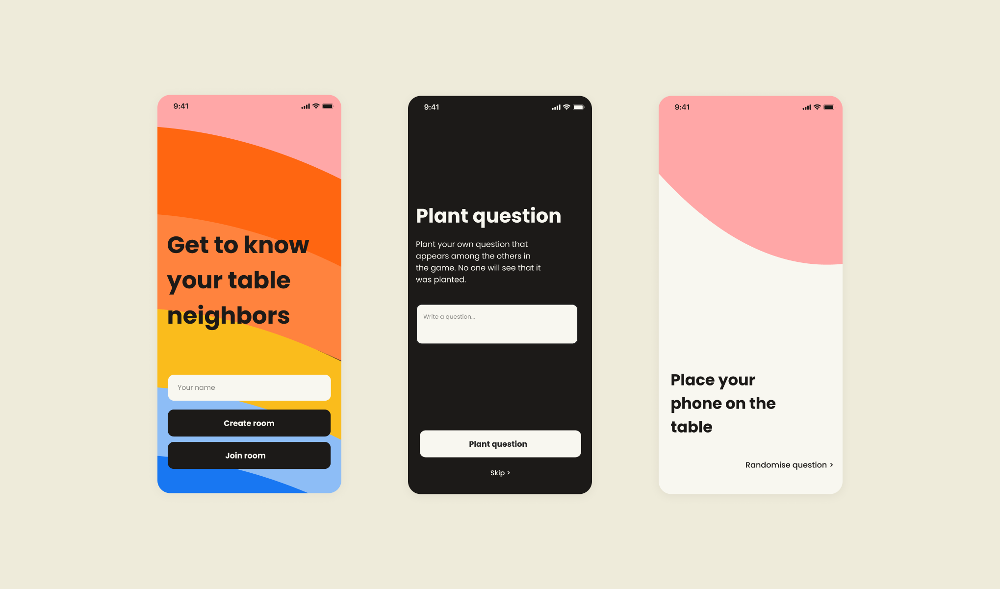

Table Talk
An app designed to spark meaningful dialogue and keep attention on each other, not the screen.
TableTalk was created in response to a common challenge in social settings: mobile phones often pull people away from each other rather than bringing them closer. Our mission was to change that dynamic. We set out to design an app that would use technology to encourage face-to-face conversation, not replace it. As a UX designer on the team, I focused on crafting an experience where every interaction supported real-world connection.
Reframing the Problem: From Screen Time to Face Time
We started with a simple insight. Many games meant to connect people ended up isolating them behind their screens. Our goal was to design an experience where the phone acted as a facilitator rather than the center of attention. This required every UX decision to be intentional, ensuring that the app enhanced social interaction without dominating it.
Designing for Delight Without Overdesigning
During the research phase, we carried out competitor and user analysis. We found that existing solutions either relied too much on screen engagement or placed all control in the hands of a single player. Neither model fostered an inclusive or immersive experience. We established a clear design goal: the app should be so intuitive that users almost forget it exists. In the lo-fi prototyping phase, each team member explored different interaction models individually. We focused on how users would begin and end a game, choose categories, and interact as a group. One of the most valuable insights was that undefined game sessions, where users end the game when it feels right, created the most natural flow. This decision aligned closely with our core idea of encouraging presence and dialogue.
From Ideas to Interfaces: Building the MidFi Prototype
With validated design patterns in place, we brought together the strongest ideas into a MidFi prototype. We used Figma to build the prototype and Miro to map flows and gather visual inspiration. The team created a shared moodboard and collaboratively developed a design language that conveyed warmth, playfulness, and ease of use. A consistent component library ensured visual alignment and efficiency. Each design choice, from type hierarchy to color contrast, supported clarity and accessibility. These foundations allowed the team to test and refine interactions with confidence.
Testing as Learning, Not Just Validation
We tested the MidFi prototype with multiple user groups in a simulated multiplayer setting. Our goal was not just to confirm what worked, but to learn what didn’t. The testing process revealed subtle issues in navigation, feedback, and labeling. For example, users missed that they needed to enter their name before proceeding, prompting us to add visual cues and validation. We also discovered gaps between our logic and users’ expectations. A button labeled “Till lobbyn” caused confusion about whether it meant exiting the game or returning to a previous menu. This feedback helped us rethink the navigation and revise language to better reflect user mental models.
The HiFi Prototype: Cohesive, Playful, Purposeful
The final HiFi prototype was built in React Native, combining the refined interface with a fully functioning app. While the core development was shared across the team, I remained closely involved to ensure the UX decisions translated accurately into the final product. One example of a small but impactful design detail was the “I’m ready” check-in screen before starting the game. It prevented the host from launching the session too early and reinforced a sense of shared participation. Though simple, this feature played a role in creating a smoother, more respectful experience for everyone involved.
Guiding Principles Behind Every Screen
Throughout the project, a few key UX principles guided our decisions: - **Clarity first**. Language, labels, and feedback were designed to minimize confusion. - **Consistency builds trust**. A unified design system helped users feel comfortable navigating. - **Let the user lead**. Flexibility in session length and category choice gave users control. - **Test early and often**. We let user behavior shape the product, not assumptions. These principles helped create an app that didn’t just function well, but felt natural and engaging.
Outcome and Reflections
TableTalk succeeded in turning mobile devices into tools for connection rather than distraction. Players were guided through meaningful questions and moments of laughter, all while keeping their focus on the people around them. This project reinforced my belief in the power of UX to shape behavior in subtle but important ways. It also strengthened my skills in research, collaborative prototyping, iterative testing, and designing for real-world interaction. Most importantly, it reminded me that the best user experiences are the ones that step out of the way and let people connect.
